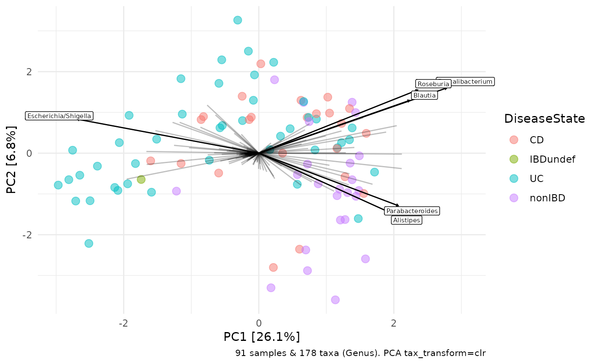

R/scale_shape_girafe_filled.R
scale_shape_girafe_filled.RdGenerates a custom ggplot2 shape scale, as used in ord_explore's ordination. Uses filled shapes, therefore fill aesthetic must be set, in addition to colour, to have filled shapes. Points with NA values for the shape variable are shown as hollow circles.
scale_shape_girafe_filled()
ggplot2 Scale object
Composite shapes e.g. number 7 "square cross" cause ggiraph interactive plots to fail when a variable shape and tooltip is set.
Shapes used are, in order: "circle filled", "triangle filled", "square filled", "diamond filled", and "triangle down filled"
corncob::ibd_phylo %>% tax_fix() %>% phyloseq_validate() %>% tax_transform(rank = "Genus", transformation = "clr") %>% ord_calc( method = "PCA" ) %>% ord_plot( axes = c(1, 2), plot_taxa = 1:6, colour = "DiseaseState", fill = "DiseaseState", shape = "circle", alpha = 0.5, size = 3 ) + scale_shape_girafe_filled()